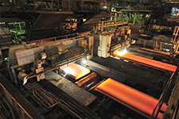
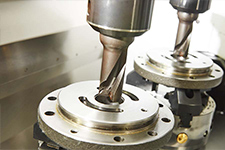
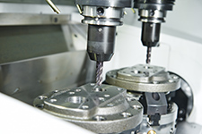

Компания ООО "ТПК Вира" с 2017 года занимается различными видами обработки металлических изделий, производством деталей, подготовкой конструкторской документации.
Это все виды механической обработки, термической обработки, производством почти любых звездочек для цепей, зубчатых колес, валов, шнеков, муфт и многого другого!
Кроме того, мы предоставляем услуги ковки.
  Наша компания располагается в городе Ростове-на-Дону Ростовской области, но, благодаря налаженной схеме работы, мы сотрудничаем и отсылаем наш товар во все регионы России и во многие страны СНГ.
В нашем каталоге представлено большинство категорий товаров и услуг, которые мы можем оказать, но при необходимости мы можем выполнять работы нестандартного характера. Поэтому, если вы не встретите на страницах каталога именно то, что искали, просто оставьте заявку в форме на сайте. Вполне вероятно, что мы или наши партнеры сможем реализовать выполнение нужных работ или изготовление изделий
Компания ООО "ТПК Вира" ориентирована на плотную работу с клиентами, и в отличие от многих конкурентов, мы нацелены на максимально быстрый отклик на заявку, точные расчеты сроков и четкое соблюдение всех требований заказчика.